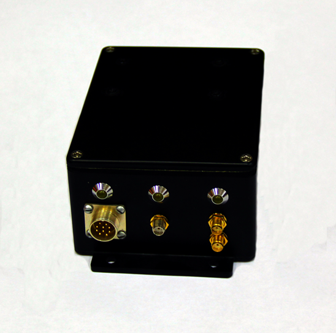
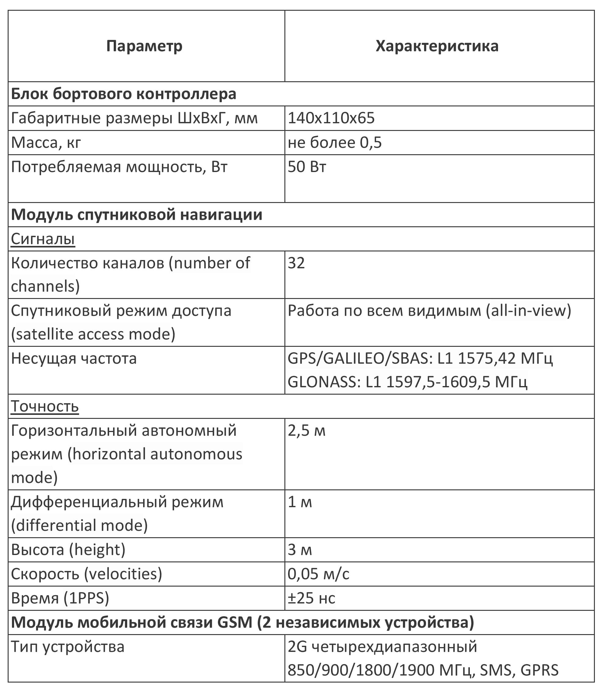

Бортовой контроллер спутниковой системы мониторинга транспорта
Бортовой контроллер представляет собой электронный программируемый блок, устанавливаемый на подвижную единицу (автомобиль, локомотив). Блок состоит из модуля выполняющего базовые навигационные функции, модуля мобильной связи GSM (GPRS) и встроенного источника питания, обеспечивающего питание устройства от бортовой сети автомобиля или локомотива (в зависимости от исполнения). В зависимости от условий эксплуатации (опционально) и требований заказчика блок может дополняться встроенным инерциальным навигационным модулем, а также функцией замера уровня топлива. Во время работы прибор при помощи навигационного приемника определяет свое текущее местоположение, вычисляет фактическую скорость движения и передает данные на сервер по каналам мобильной связи GSM (GPRS).
Функции устройства:
- Определение местоположения объекта на карте (плане) в режиме реального времени.
- Вычисление и передача на сервер параметров движения (текущей фактической скорости, направления движения).
Технические характеристики
Применение данного устройства позволяет:
- Вести удаленный контроль за дислокацией и перемещением локомотивов, самоходного и специального железнодорожного подвижного состава, а так же автомобильного транспорта в режиме реального времени.
- Удаленно выявлять нарушения скоростного режима, технологически необоснованные простои.
- На основе данных архива сервера проводить анализ, определять фактические основные показатели работы, осуществлять планирование использования транспортных средств.
- Снизить эксплуатационные расходы за счет оптимизации планирования использования транспортных средств.
Тестирование программного обеспечения в режиме реального времени на подвижном объекте
Контактная информация
Электронная почта
info@mals.su